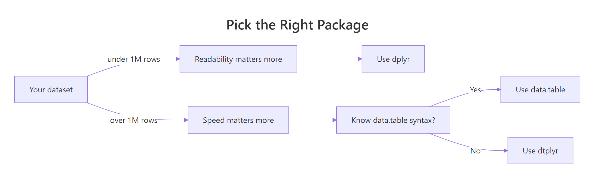

data.table vs dplyr in R: Head-to-Head Performance Benchmark: Which Is Right for You?
data.table is faster and uses less memory on large datasets; dplyr is more readable and easier to learn. For most everyday work the speed gap is invisible, so the right pick depends on data size, team familiarity, and how much you value concise code over plain-English verbs.
How do data.table and dplyr differ at a glance?
Both packages solve the same problem, wrangling rectangular data, but they pick opposite trade-offs. dplyr reads like English verbs chained with a pipe; data.table compresses the same idea into a single bracket expression. The fastest way to feel the difference is to run the same task in both and look at the code side by side. Below is a group-by-and-summarise on the built-in mtcars dataset, written each way.
Same answer, two very different shapes. The data.table version fits on a single line; the dplyr version reads almost like English. Notice how data.table uses [i, j, by], rows, then columns or expressions, then groups, while dplyr uses one verb per step. Neither is wrong; they are just different mental models for the same task.
Try it: Write the dplyr equivalent of mt_dt[, .(mean_hp = mean(hp)), by = gear]. Compute mean horsepower for each gear count.
Click to reveal solution
Explanation: group_by(gear) splits the data into one group per gear count, and summarise() collapses each group into a single row with the mean.
How do their syntaxes compare for the same task?
The cleanest way to learn either package is to map every dplyr verb to its data.table equivalent. dplyr has one verb per task; data.table folds many tasks into the [i, j, by] shape. Here is a quick reference, then two runnable examples.
| Task | dplyr | data.table | |
|---|---|---|---|
| Filter rows | filter(mpg > 25) |
DT[mpg > 25] |
|
| Select columns | select(mpg, cyl) |
DT[, .(mpg, cyl)] |
|
| Sort rows | arrange(mpg) |
DT[order(mpg)] |
|
| Add column | mutate(kpl = mpg * 0.425) |
DT[, kpl := mpg * 0.425] |
|
| Group + summarise | `group_by(cyl) \ | > summarise(...)` | DT[, .(...), by = cyl] |
| Inner join | inner_join(x, y, by = "id") |
x[y, on = "id", nomatch = 0] |
Let's start with filtering and selecting columns. The same task, keep light, fuel-efficient cars and show only three columns, looks like this in both packages.
Both produce the same five cars. dplyr's pipeline reads top-to-bottom: add a model column, filter, select. data.table folds it into one expression, [rows, columns], which is shorter but harder to scan if you have not seen the syntax before.
Now let's add a column. This is where the two packages really diverge. dplyr's mutate() returns a new tibble; data.table's := operator updates the original object in place, with no copy.
Notice the assignment styles. data.table's := returns nothing visible, it changes mt_dt directly. dplyr's mutate() is pure: it gives you back a new object that you have to capture with <-. This single difference is the root of most performance gaps you will see in the next section.
DT[, col := value], no copy of the table is made. dplyr's mutate always produces a new object, which is safer but slower on large data.Try it: Use both packages to keep only mtcars rows where mpg > 25, returning just the mpg and cyl columns.
Click to reveal solution
Explanation: In data.table, the first slot of [i, j, by] filters rows and the second slot picks columns. In dplyr, you spell out each step as a verb in a pipeline.
Which package is faster for filtering and group-by?
Speed is the headline reason people reach for data.table. The package is written in C, sorts with radix sort (one of the fastest known sort algorithms), and updates columns in place, three things that compound on large data. Let's measure it on a million-row synthetic dataset.
On this run, data.table finished the same job in roughly a third of the time. The exact ratio varies with the operation, the number of groups, and the column types, but the direction is consistent. data.table also allocates less memory because it never copies the underlying columns. dplyr's modern engine has closed a lot of this gap, so on small data (under ~100k rows) you usually cannot tell the difference by eye.
Here is a quick memory check using base R's object.size(). Numbers will vary slightly across runs.
The result objects are tiny because the summary collapses 1M rows down to 26. But during the computation, data.table held a single in-place reference while dplyr built intermediate group structures, that intermediate cost is what really matters on large data.
sort(), the second avoids copies, the third skips R's interpreter overhead.Try it: Use system.time() to benchmark a sum-by-group on a 100k-row table, you should see both packages finish in a fraction of a second.
Click to reveal solution
Explanation: At 100k rows, both packages return in milliseconds. The difference only matters when you scale up to millions of rows or many groups.
How do they compare on joins?
Joins are the second place where data.table's speed advantage shows up clearly. dplyr ships the familiar SQL family, inner_join(), left_join(), right_join(), full_join(), anti_join(), semi_join(). data.table uses bracket notation: X[Y, on = "id"], optionally with a sorted setkey() for extra speed. Same operation, different spelling.
Both joins return the same five rows with order, customer, and amount glued together. The data.table syntax flips the mental order, you index into customers_dt with orders_dt, which feels strange at first but reads cleanly once you get used to it.
setkey(DT, cust_id) once sorts the table by cust_id and lets future joins on that column skip the search step. dplyr 1.1+ added join_by() for non-equi conditions like join_by(closest(date >= start_date)), closing one of the few feature gaps with data.table.Try it: Write a left join, keep all orders_dt rows even when no customer matches, using both packages.
Click to reveal solution
Explanation: Dropping nomatch = 0 from the data.table join turns it into a left join, unmatched rows on the right side become NA. dplyr's left_join() does the same thing by default.
When should you pick data.table vs dplyr?
There is no universal winner. The right choice depends on three things: how big your data is, how much your team already knows, and how much you value short code over plain-English code. Here is a decision matrix to make the trade-off concrete.
| Situation | Pick |
|---|---|
| Under 100k rows, learning R | dplyr, readable, gentle curve, huge tutorial supply |
| Production pipeline on millions of rows | data.table, speed and memory both matter |
| Team already deep in tidyverse | dplyr, consistency beats microseconds |
| Memory-tight environment (cloud cost matters) | data.table, in-place updates avoid copies |
| You want dplyr syntax with data.table speed | dtplyr, best of both worlds |
| Interactive exploration, frequent rewrites | dplyr, pipes are easy to refactor |
| One-line scripts, CLI workflows | data.table, concise wins |

Figure 1: When to pick data.table, dplyr, or dtplyr based on data size and code priorities.
There is a third path that gets surprisingly little attention: dtplyr. It lets you write dplyr code that runs on a data.table backend. You wrap your data in lazy_dt(), then chain dplyr verbs as usual. Internally, dtplyr translates the pipeline to data.table syntax and runs it. You get most of data.table's speed without giving up dplyr's readability.
The key call is as_tibble() (or as.data.table()) at the end, that is what triggers dtplyr to actually run the translated query. Until then, everything is lazy: dtplyr is just building up a data.table expression in the background.
Try it: Take a small dplyr pipeline and rewrite it using lazy_dt().
Click to reveal solution
Explanation: lazy_dt() wraps the data.table; the dplyr verbs build a query plan; as_tibble() runs it and returns a regular tibble.
Practice Exercises
These capstone exercises combine multiple concepts. Use distinct variable names so your work does not overwrite the tutorial state.
Exercise 1: Filter + group + count cutoff in both packages
On mtcars, group by cyl, compute mean mpg and a count, then keep only groups with more than 5 cars. Write it in both packages and check the answers match.
Click to reveal solution
Explanation: data.table chains two [ calls, the first computes the summary, the second filters it. dplyr does the same in two pipeline steps. All three groups have more than 5 cars, so all survive.
Exercise 2: Filter, group, summarise on synthetic 200k-row sales data
Generate 200k rows of synthetic sales data with region, qty, and sales columns. For each region, compute the mean and standard deviation of sales for rows where qty > 5. Write the data.table one-liner and the dplyr pipeline.
Click to reveal solution
Explanation: Both versions filter to high-qty orders, then average and spread sales per region. The means cluster near 252 because sales was drawn from a uniform 5–500 distribution.
Exercise 3: Join then summarise per customer
Inner-join an orders table to a customers table, then summarise total spend per customer in both packages.
Click to reveal solution
Explanation: Both versions join on cust_id, then group by name and sum amount. data.table chains the join and the group-by into a single bracket sequence; dplyr spells each step as its own verb.
Complete Example
Let's tie everything together with a small end-to-end pipeline on a synthetic e-commerce dataset. The task: filter to last-quarter orders, compute revenue, group by region, summarise total revenue and average order value, and sort descending. Same task in both packages, side by side.
Both pipelines return the four regions ranked by Q4 revenue. The data.table version chains three [ calls; the dplyr version chains five named verbs. Pick the one that matches how you want the next person reading the code to think. At 10k rows, both finish in milliseconds, the speed difference would only matter if sales had millions of rows.
Summary
| Dimension | Winner | Notes |
|---|---|---|
| Raw speed (>1M rows) | data.table | 2-10× faster on group-by, joins, filters |
| Memory efficiency | data.table | In-place updates with :=, no copies |
| Readability | dplyr | English verbs, top-to-bottom pipeline |
| Learning curve | dplyr | One verb per task, fewer surprises |
| Concise code | data.table | [i, j, by] is shorter |
| Tidyverse fit | dplyr | Plays well with ggplot2, tidyr, purrr |
| Best of both | dtplyr | dplyr syntax, data.table backend |
Bottom line: Use dplyr for everyday data work, exploration, and code that other people read. Reach for data.table when speed or memory becomes a real bottleneck. Use dtplyr when you want both, it is the lowest-friction upgrade path from dplyr to data.table speed.
References
- data.table CRAN page. Link
- dplyr, Tidyverse documentation. Link
- data.table introduction vignette. Link
- Wickham, H. & Grolemund, G., R for Data Science (2e), Data Transformation chapter. Link
- dtplyr, data.table backend for dplyr. Link
- Rdatatable, Benchmarks: Grouping (official wiki). Link
- Atrebas, A data.table and dplyr tour. Link
- Tyson Barrett, Comparing efficiency and speed of data.table. Link
Continue Learning
- dplyr filter() and select(), the core dplyr verbs for subsetting rows and columns.
- dplyr group_by() and summarise(), split-apply-combine the dplyr way.
- dplyr mutate() and rename(), add and rename columns in a dplyr pipeline.